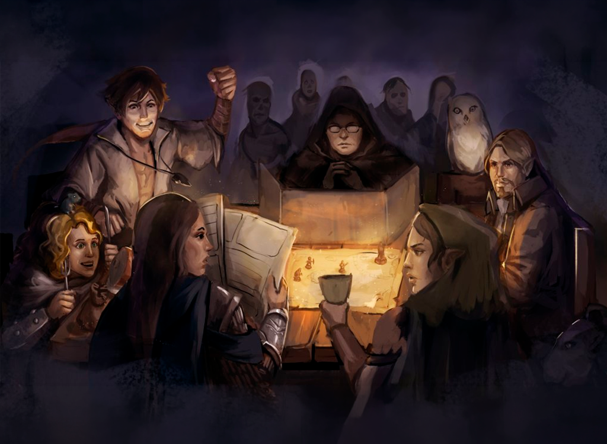

Para jogar RPG, a primeira coisa que você precisa é um personagem, o herói que vai participar da aventura. Ele é como um lutador no videogame que faz o que você quer quando aperta um botão. Mas, em vez de apertar botões, você vai falar em voz alta o que seu personagem vai fazer.
O que o jogador fala o personagem faz. Se você diz “estou abrindo a porta”, seu personagem vai abrir a porta.
A primeira coisa a fazer é escolher o conceito de quem você vai ser. Um guerreiro orc com um machado mágico vestindo uma pele de tigre? Uma fada feiticeira caçadora de lobisomens? Uma criança druida sem educação formal em magia que aprendeu a se transformar em rato e agora gosta de assustar as pessoas? Você pode ser tudo isso e qualquer coisa que imaginar.
Consulte as páginas Interpretando e Arquétipos para mais dicas sobre interpretação e roleplay.
A Ficha de PersonagemDepois de escolher quem você vai ser vamos preencher a Ficha de Personagem. Ela vai guardar as informações sobre o que o seu personagem consegue fazer, seu estado atual e inventário. Essas informações são importantes e você vai consultar sempre sua ficha para ver o que e como você consegue fazer.
Você é livre para fazer sua ficha, mas há regras: ela mede o poder do personagem e esse poder tem um limite. Para fazer seus heróis você recebe uma quantidade de pontos, e são esses pontos que vão “comprar” os poderes do personagem.
Você vai receber 17 pontos para colocar nas características do seu personagem do jeito que você quiser, comprar Vantagens e Habilidades.
Você também vai ter um espaço para falar brevemente sobre ele, registrar seu inventário, grimório, habilidades, peculiaridades e história de vida.
As Características são informações importantes sobre seu personagem: os números que dizem como ele é. Quanto mais altas, mais poderoso ele será. Elas variam de 0 a 5.
As Características são Força, Inteligência, Destreza, Resistência e Carisma. Pessoas medianas sempre tem 0 nessas Características, e 1 é o máximo para um humano normal. Qualquer número acima de 1 é considerado heroico.
Cada ponto compra +1 em uma Característica na Ficha de Personagem.
Os Pontos de Vida, ou PV, são a “energia” de um personagem. Quanto mais pontos de vida ele tem mais difícil é derrotá-lo.
Para saber quantos PV o personagem tem, jogue um dado para cada ponto de Resistência que ele tem. Por exemplo, se João tem 3 pontos de Resistência, ele joga três dados e soma os resultados. Se ele tirou 4, 5 e 3 ele vai ter 4+5+3 = 12 Pontos de Vida.
Ele perde pontos a cada dano que levar e se chegar a 0 ele fica desmaiado até que algum amigo o ajude. Você recupera PV descansando ou tomando uma poção.
Se um personagem chega a -10, ele morreu. 👻
Os Pontos de Magia, ou PM, são o “combustível” que seu personagem usa para usar uma magia. Um mago gasta PM para lançar uma magia, e recupera PM descansando ou tomando uma poção.
Todo personagem possui PM, mas nem todo personagem é um usuário de magia, ou vai ser capaz de usá-la. Esses pontos não são exclusivos para magias, porém, e podem ser gastos em outras ações, como as concedidas por algumas Vantagens. Nesses casos, podemos considerar que o personagem não usou de magia, mas de uma força de vontade enorme, ajuda do destino, adrenalina ou energia vital do personagem.
Cada personagem tem 2 + Inteligência PM. Se INT aumenta, Magia também.
As Vantagens são como poderes especiais que cada personagem tem. Você compra vantagens com os pontos que usa nas Características do personagem. Em vez de gastar tudo nelas, você pode guardar um ou dois para ter uma vantagem, como um Ataque Especial. Você pode comprar no máximo 3 vantagens.
As Desvantagens são suas fraquezas, coisas que te atrapalham. Uma desvantagem te dá um ponto, que você pode gastar para ter uma característica mais forte, ou para ter uma vantagem.
Você pode ter no máximo 3 desvantagens, mas lembre-se: elas te atrapalham. E tudo bem, ninguém é perfeito! Um bom personagem tem qualidades e defeitos que o tornam interessante.
Pode acontecer que durante a aventura você encontre um anel mágico com o poder de dar uma vantagem. Assim você consegue uma vantagem aleatória, que o Mestre vai escolher, que pode ser útil ou não – e não precisa gastar pontos. Também pode ser que você perca uma vantagem. Um vilão pode usar uma magia que suga poderes, por exemplo. Você não recebe de volta os pontos que gastou na vantagem perdida.
É claro que você também pode ganhar uma desvantagem, gostando disso ou não! Se estragou os planos de um vilão ele pode se tornar seu inimigo, ou um fantasma pode começar a assombrar você. E isso não te dá pontos para gastar. Mas calma: você também pode perder uma desvantagem, com muito tempo e esforço, ou um mago bondoso usar sua magia para ajudar. Tudo pode acontecer.
Habilidade é um conhecimento do seu personagem, alguma coisa que ele sabe fazer bem. Por exemplo, um personagem que tem a habilidade Medicina consegue cuidar dos ferimentos do grupo e ajudar pessoas feridas, identificar doenças, recomendar remédios, parar um sangramento e assim por diante.
A magia é um tipo de poder diferente, que gasta energia para ser usada: os Pontos de Magia. Se você ficar sem PM não vai poder usar magias até descansar ou tomar uma poção. A critério do Mestre e usando um teste, usar uma magia tendo PM insuficientes pode drenar PV.
Dependendo da sua história, um personagem começa a aventura conhecendo algumas magias (até 4). No decorrer da aventura ele pode aprender novas magias por diversos meios.
Os personagens carregam suas coisas em uma mochila ou itens parecidos de carga. Você pode ter um número limitado de coisas, e o Mestre pode dizer quando você já está carregando peso ou coisas demais.
Você pode começar o jogo com no máximo 6 itens, com a aprovação do Mestre.
Abaixo você pode fazer o download da ficha em PDF ou abrir a ficha preenchível online.